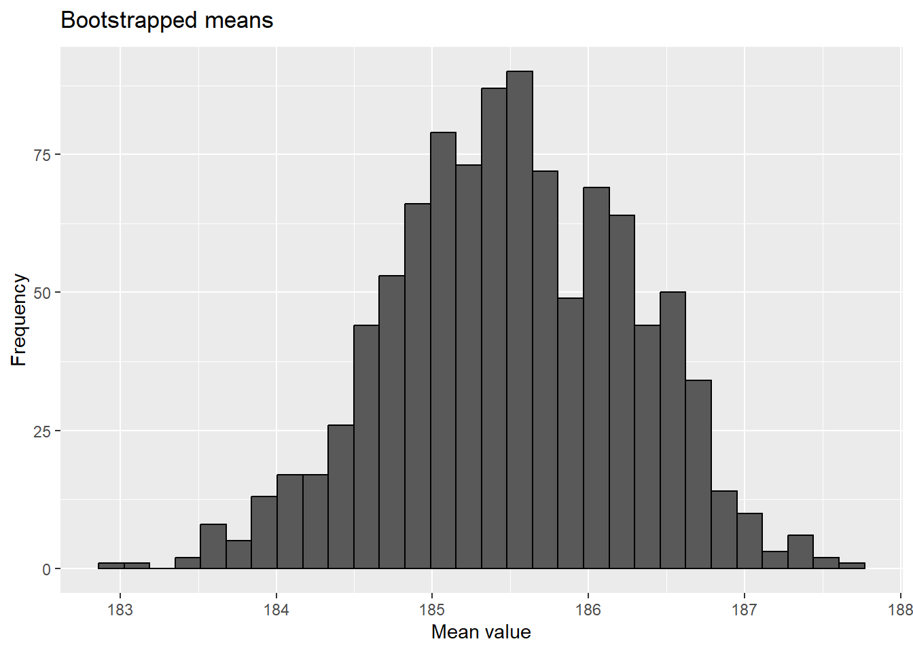

From lecture! Consider if average height of males training at the Australian Institute of Sport is different than average of human population.
These are all one sample tests, but they differ in what we know. If we know the variance of our population, we use a z test (function in BSDA package).
sport <-read.table("http://www.statsci.org/data/oz/ais.txt", header = T)library(BSDA)
Loading required package: lattice
Attaching package: 'BSDA'
The following object is masked from 'package:datasets':
Orange
z.test(sport[sport$Sex =="male", "Ht"], mu =175.6, sigma.x=7)
One-sample z-Test
data: sport[sport$Sex == "male", "Ht"]
z = 14.292, p-value < 2.2e-16
alternative hypothesis: true mean is not equal to 175.6
95 percent confidence interval:
184.1474 186.8643
sample estimates:
mean of x
185.5059
If we don’t, we use a t-test
t.test(sport[sport$Sex =="male", "Ht"], mu =175.6)
One Sample t-test
data: sport[sport$Sex == "male", "Ht"]
t = 12.658, df = 101, p-value < 2.2e-16
alternative hypothesis: true mean is not equal to 175.6
95 percent confidence interval:
183.9535 187.0583
sample estimates:
mean of x
185.5059
These both assume the means of the data are normal! If we want to relax that assumption, we can use the Wilcoxon test (also known as Mann-Whitney test, signed binary transform, or other terms!). This assumes the distribution of means is symmetric.
wilcox.test(sport[sport$Sex =="male", "Ht"], mu =175.6)
Wilcoxon signed rank test with continuity correction
data: sport[sport$Sex == "male", "Ht"]
V = 5052, p-value = 5.714e-16
alternative hypothesis: true location is not equal to 175.6
One-sample Sign-Test
data: sport[sport$Sex == "male", "Ht"]
s = 90, p-value = 8.882e-16
alternative hypothesis: true median is not equal to 175.6
95 percent confidence interval:
183.9000 187.4684
sample estimates:
median of x
185.55
Achieved and Interpolated Confidence Intervals:
Conf.Level L.E.pt U.E.pt
Lower Achieved CI 0.9406 183.9 187.3000
Interpolated CI 0.9500 183.9 187.4684
Upper Achieved CI 0.9629 183.9 187.7000
Note this is just transforming data to 1/0 and doing a binomial test!
Exact binomial test
data: above_175.6 and nrow(sport[sport$Sex == "male", ])
number of successes = 90, number of trials = 102, p-value = 6.125e-16
alternative hypothesis: true probability of success is not equal to 0.5
95 percent confidence interval:
0.8035103 0.9377091
sample estimates:
probability of success
0.8823529
`stat_bin()` using `bins = 30`. Pick better value with `binwidth`.

quantile( results$t, probs=c(.025, .975) )
2.5% 97.5%
184.0537 186.9039
boot.ci(results)
Warning in boot.ci(results): bootstrap variances needed for studentized
intervals
BOOTSTRAP CONFIDENCE INTERVAL CALCULATIONS
Based on 1000 bootstrap replicates
CALL :
boot.ci(boot.out = results)
Intervals :
Level Normal Basic
95% (184.1, 187.0 ) (184.1, 187.0 )
Level Percentile BCa
95% (184.0, 186.9 ) (184.1, 187.0 )
Calculations and Intervals on Original Scale
library(MKinfer)boot.t.test(sport[sport$Sex =="male", "Ht"], mu =175.6)
Bootstrap One Sample t-test
data: sport[sport$Sex == "male", "Ht"]
bootstrap p-value < 2.2e-16
bootstrap mean of x (SE) = 185.5183 (0.7776322)
95 percent bootstrap percentile confidence interval:
184.0216 187.0442
Results without bootstrap:
t = 12.658, df = 101, p-value < 2.2e-16
alternative hypothesis: true mean is not equal to 175.6
95 percent confidence interval:
183.9535 187.0583
sample estimates:
mean of x
185.5059
Let’s practice!
Recognizing and assessing normality
1
Using the qqplot_example.R code, examine the following distributions and, for the continuous distributions (marked with a “*”), observe how a normal probability plot (qqplot) can be used to visually test for approximate normality.
For this question, its easiest to just source the main file and see what happens. When you source a script, it is run in R without showing any console output (but graphs and objects are still produced!). Try source(“https://raw.githubusercontent.com/jsgosnell/CUNY-BioStats/master/code_examples/qqplot_example.R”)
2
Review the central_limit_theorem.R code (remember
library(VGAM)
Loading required package: stats4
Loading required package: splines
Attaching package: 'VGAM'
The following objects are masked from 'package:boot':
logit, simplex
if you need to convince/remind yourself how common normality of means is for even non-normal data.
Working with data (note some sample sizes may be too small for these to all be good ideas!)
Make sure you are comfortable with null and alternative hypotheses for all examples. You should also feel comfortable graphing the data.
3
Seven observers were shown, for a brief period, a grill with 161 flies impaled and were asked to estimate the number. The results are given by Cochran (1954). Based on five estimates, they were 183.2, 149.0, 154.0, 167.2, 187.2, 158.0, and 143.0. Test the null hypothesis that the mean of the estimates is 161 flies.
Assuming variance = 275
Estimating the variance from the data
Using rank transform analysis
Using binary transform analysis
Note there are several ways to load the data! You can make a list (since the list is short):
or make a dataframe in a spreadsheet software (eg, Excel, Google Sheets) and then upload using a read.csv command. We did this in your introduction to R!
4
Yields of 10 strawberry plants in a uniformity trial are given by Baker and Baker (1953) as 239, 176, 235, 217, 234, 216, 318, 190, 181, and 225 g. Test the hypothesis that µ = 205 * Assuming variance = 1500 * Estimating the variance from the data * Using rank transform analysis * Using binary transform analysis
5
Evolutionary geneticists predicts the family sex ratio will be 80% female in broods of eagles that successfully fledge >3 young. Nests that fledge 3 or more chicks are very rare but a sample of 30 chicks are obtained from such nests and they yield 25 females and 5 males. Test the hypotheses that that: * a) the sex ratio is 50% females * b) the sex ratio is 80% females.
6
Studies of flying snakes have led researchers to posit the mean undulation rate is 1.4 Hz. You wish to test this hypothesis using the small sample of undulation rates shown below. Create a small dataset of the paradise tree snake undulation rates and choose and justify a test you can use to assess the data.
Using data from Australian athletes (http://www.statsci.org/data/oz/ais.html for details), determine if the average male training at the Australian Institute of Sport differs in weight from the average Australian male (85.9 kg) using bootstrapping techniques. Data at
sport <-read.table("http://www.statsci.org/data/oz/ais.txt", header = T, stringsAsFactors = T)